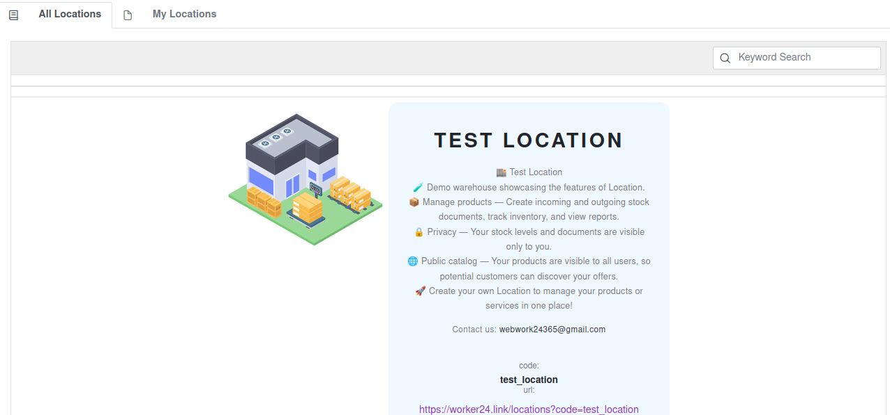
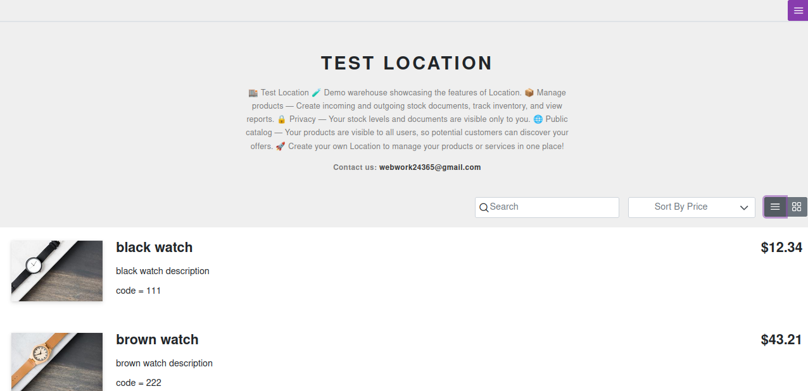
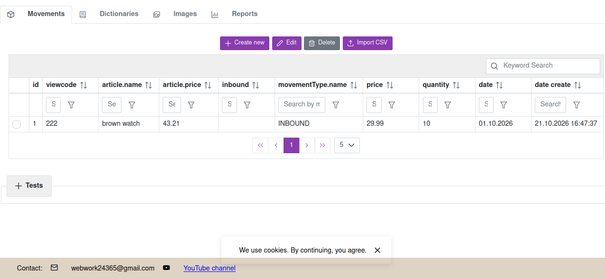
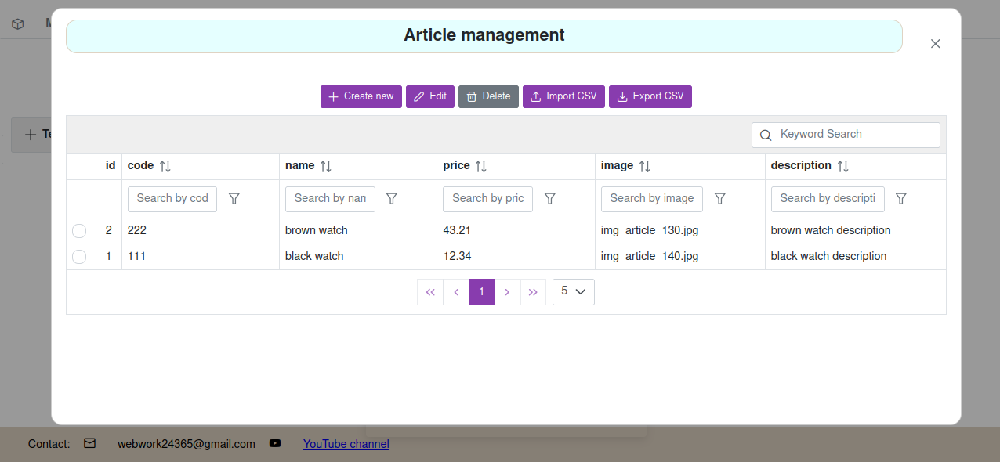
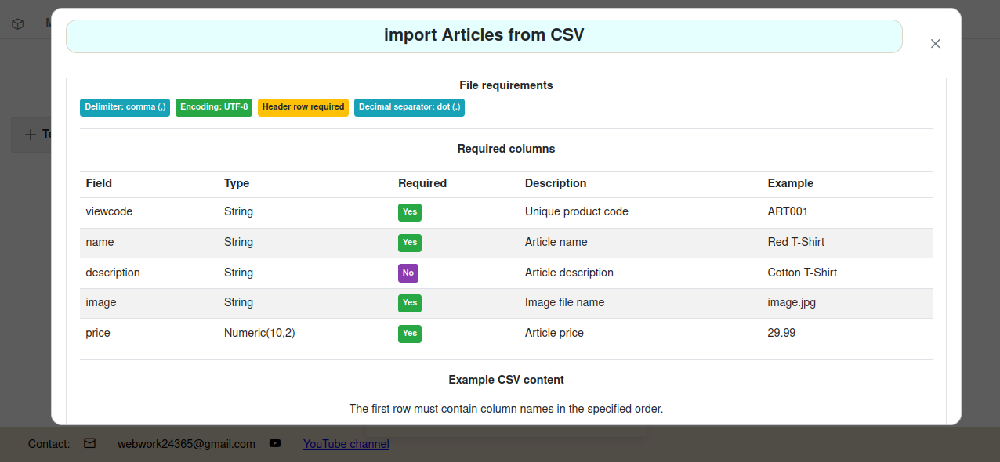

Manage your inventory, track stock movements, organize product catalogs, and make your products visible to potential customers.
Open LocationsNo installation • Online inventory management • Simple & affordable





Create your own digital warehouse to organize products and services. Maintain a product catalog and keep your inventory information organized in one place.
Record incoming products using warehouse documents and keep track of stock received into your warehouse.
Record outgoing products, document stock movements, and maintain an up-to-date record of your inventory.
Access warehouse reports to review inventory information, monitor stock movements, and better understand your warehouse operations.
Import and export your product catalog and warehouse documents to simplify data management and transfer inventory information.
Make your products visible to other Locations users. Potential customers can discover your offers and contact you by email to discuss a purchase.
Your internal warehouse documents, inventory records, and stock levels remain private. Other users can browse your public product listings but cannot access your internal warehouse data.
Access Locations through your web browser to manage your warehouse without installing dedicated inventory management software.
Locations is an online inventory and warehouse management service designed to help businesses organize products, record stock movements, and maintain warehouse documentation.
Create a digital warehouse, manage your product catalog, record incoming and outgoing stock, and monitor inventory levels. Use warehouse documents to keep track of stock movements and access reports to review your inventory.
Locations also supports importing and exporting product catalogs and warehouse documents, helping you transfer and manage your data more efficiently.
In addition to inventory management, Locations allows you to publish product listings that are visible to other users. Potential buyers can contact you by email to discuss purchases. Currently, payments and transactions are arranged directly between buyers and sellers outside the Locations platform.
Locations is designed to evolve into a platform that can combine inventory management with an integrated online store.
Try Locations for the first 30 days at no cost and explore its inventory management features.
After the free period, the service costs just $0.30 per day.
Manage up to 1,000 product items per warehouse. Keep your catalog and inventory information organized in one place.
Import and export product catalogs and warehouse documents to make inventory data management easier.
Set up your digital warehouse and organize your product catalog.
Create incoming and outgoing warehouse documents to record inventory movements.
Review inventory information and use reports to monitor warehouse operations.
Make selected products visible to other Locations users and let potential customers contact you by email.
Create your digital warehouse, track stock movements, manage warehouse documents, import and export data, and make your products visible to potential customers.
Start with 30 days free, then continue for just $0.30 per day.
Open Locations